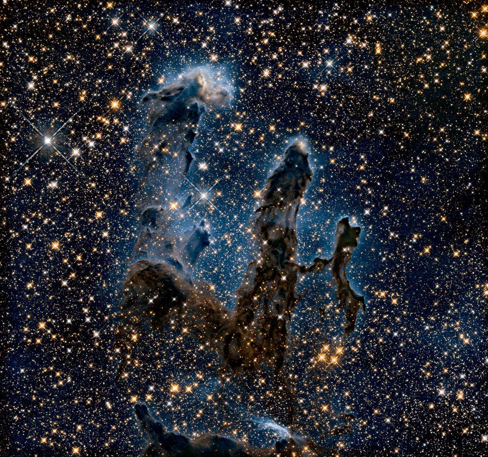

Nebulae
✨ The Stellar Nurseries of the Universe

Illustration of a glowing nebula — a cloud of gas and dust lit by newborn stars within
What Is a Nebula?
A nebula (plural: nebulae) is a vast cloud of gas and dust
floating in interstellar space. The word comes from the Latin for “cloud” or
“mist.” Nebulae are among the most visually spectacular
objects in the universe, glowing in brilliant colours caused by the ionising radiation
from nearby stars heating the surrounding gas to extreme temperatures.
Hydrogen, helium, oxygen, and other elements emit characteristic colours when energised,
producing the painterly reds, blues, and greens that make nebulae so iconic in
astronomical photography.
Nebulae play a fundamental role in the life cycle of stars. They are both stellar nurseries — regions where new stars are born from collapsing clouds of gas and dust — and the remnants of dying stars that have shed their outer layers back into space. In this sense, every atom in our bodies was once part of a nebula, forged inside a long-dead star and expelled into the cosmos billions of years ago.
Types of Nebulae
Astronomers classify nebulae into several categories based on how they form and how they interact with light. Each type tells a different story about the life cycle of stars and the composition of the interstellar medium.
- Emission Nebulae
- The most colourful and photographed type of nebula. Emission nebulae are clouds of ionised gas that emit light of specific wavelengths. The energy source is usually one or more hot young stars embedded within or near the cloud. The Orion Nebula (M42) is one of the most famous examples, visible to the naked eye as the middle “star” of Orion’s sword.
- Reflection Nebulae
- Unlike emission nebulae, reflection nebulae do not emit their own light. Instead, they scatter light from nearby stars, much like fog scattering light from a streetlamp. They typically appear blue because dust particles scatter shorter wavelengths more efficiently. The Pleiades star cluster is surrounded by a beautiful reflection nebula.
- Dark Nebulae
- Dense, cold clouds of gas and dust so thick that they block the light from objects behind them. Dark nebulae appear as silhouettes against brighter backgrounds. The famous Horsehead Nebula in Orion is a dark nebula seen against the glowing backdrop of an emission nebula. These regions are often sites of active star formation hidden from visible-light telescopes.
- Planetary Nebulae
- Despite their name, planetary nebulae have nothing to do with planets. They are shells of gas expelled by a dying star in the late stage of its life, when a Sun-like star exhausts its fuel and swells into a red giant before shedding its outer layers. The remaining hot core (a white dwarf) ionises the expelled gas, creating a glowing shell. The Ring Nebula (M57) is a classic example, visible through a small telescope.
- Supernova Remnants
- When a massive star explodes in a supernova, it releases enormous amounts of energy and hurls its outer layers into space at speeds up to 30,000 km/s. The expanding shell of gas and dust forms a supernova remnant. The Crab Nebula (M1) is the remnant of a supernova observed by Chinese astronomers in 1054 AD. These remnants enrich the interstellar medium with heavy elements forged inside the star.
Five Most Famous Nebulae
Throughout history, certain nebulae have captured the imagination of astronomers and the general public alike. Here are five of the most celebrated nebulae ever studied.
- The Orion Nebula (M42) — Located 1,344 light-years from Earth in the constellation Orion, this is the closest large star-forming region to our Solar System. It contains thousands of young stars and is visible to the naked eye on clear nights, making it the most-observed deep-sky object in history.
- The Crab Nebula (M1) — A supernova remnant about 6,500 light-years away, expanding at roughly 1,500 km/s. At its centre lies a rapidly spinning neutron star (pulsar) that rotates 30 times per second. It was first recorded by Chinese, Japanese, and Arab astronomers when the supernova brightened the sky in 1054 AD.
- The Eagle Nebula (M16) — Home to the iconic Pillars of Creation, columns of interstellar gas and dust photographed by the Hubble Space Telescope in 1995. These towering pillars, up to 4 light-years tall, are regions of active star formation and became one of the most famous astronomical images ever taken.
- The Ring Nebula (M57) — A planetary nebula in the constellation Lyra, about 2,300 light-years away. It appears as a tiny glowing ring through a small telescope and represents the final fate of a Sun-like star. The dying white dwarf at its centre is 200 times hotter than our Sun.
- The Helix Nebula (NGC 7293) — The largest planetary nebula in apparent size as seen from Earth, spanning about 2.5 light-years in diameter. Located only 655 light-years away in the constellation Aquarius, it has earned the nickname “the Eye of God” due to its striking appearance in Hubble imagery.
Nebulae at a Glance
| Name | Type | Distance (Light-Years) | Constellation | Notable Feature |
|---|---|---|---|---|
| Orion Nebula (M42) | Emission | 1,344 | Orion | Closest star-forming region; naked-eye visible |
| Crab Nebula (M1) | Supernova Remnant | 6,500 | Taurus | Contains a pulsar spinning 30 times per second |
| Eagle Nebula (M16) | Emission | 7,000 | Serpens | Home to the iconic “Pillars of Creation” |
| Ring Nebula (M57) | Planetary | 2,300 | Lyra | Classic example of a dying Sun-like star’s remnant |
| Helix Nebula (NGC 7293) | Planetary | 655 | Aquarius | Largest apparent-size planetary nebula; “Eye of God” |
| Horsehead Nebula (B33) | Dark | 1,500 | Orion | Iconic dark silhouette against a glowing emission nebula |
Fascinating Nebula Facts
- Scale beyond imagination — The largest known nebula, the Tarantula Nebula in the Large Magellanic Cloud, stretches roughly 1,000 light-years across. If it were at the distance of the Orion Nebula, it would span 60 degrees of the sky — covering more than the width of your hand held at arm’s length.
- The building blocks of life — Nebulae contain complex organic molecules, including amino acids and alcohols, detected through radio telescope observations. The raw ingredients for life are scattered throughout the interstellar medium in nebular clouds.
- James Webb’s nebula discoveries — The James Webb Space Telescope has revealed unprecedented detail inside nebulae, including newly forming stellar systems (proto-planetary discs) inside the Orion Nebula that were previously hidden from Hubble by thick dust clouds.
- Invisible to the naked eye — Most nebulae are invisible without a telescope because they emit light primarily in infrared and ultraviolet wavelengths. Space telescopes like Spitzer, Chandra, and Webb image nebulae across the electromagnetic spectrum and translate those wavelengths into visible-light colour images.
- Our Sun will become a nebula — In approximately 5 billion years, the Sun will exhaust its hydrogen fuel, expand into a red giant, and shed its outer layers into a planetary nebula. The remaining core will cool slowly as a white dwarf, surrounded by a glowing shell of expelled gas.
Explore stunning nebula images and the latest research at the NASA Nebulae Science Page.